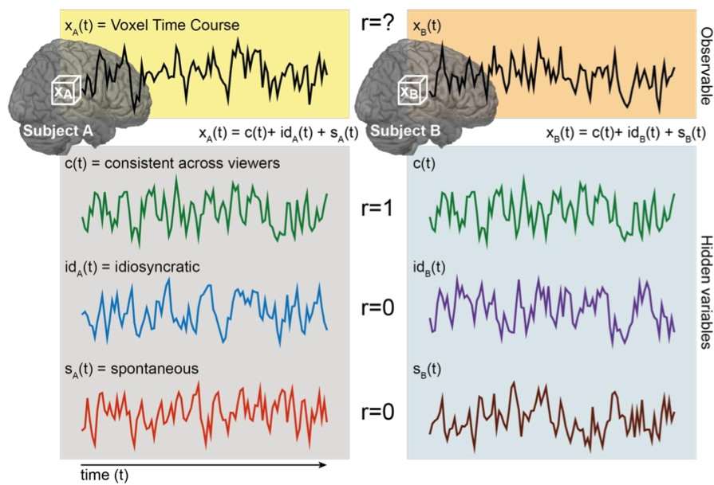
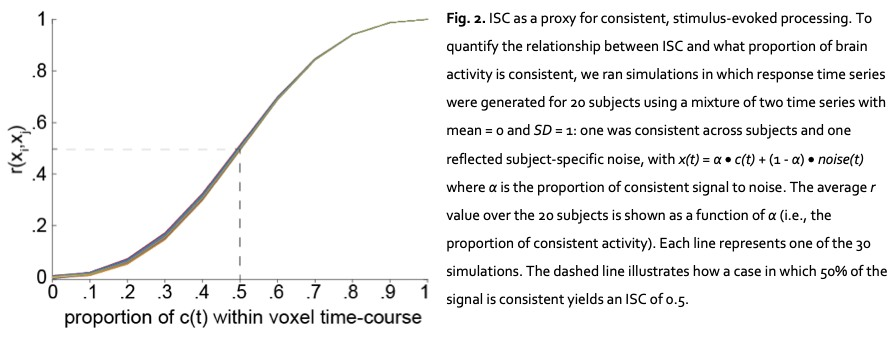
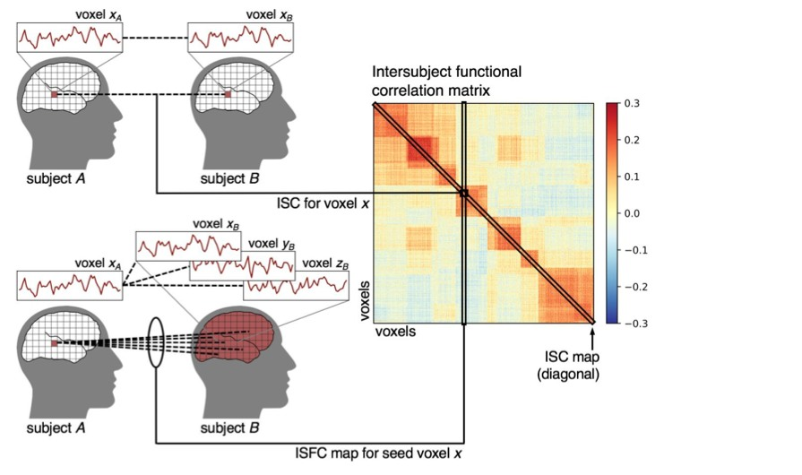
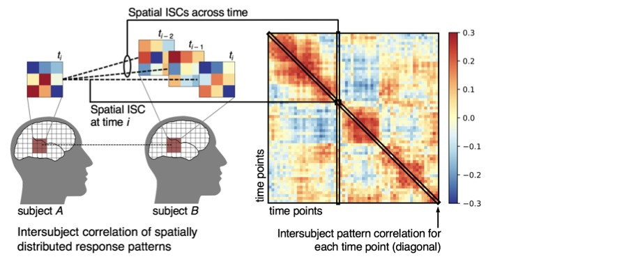
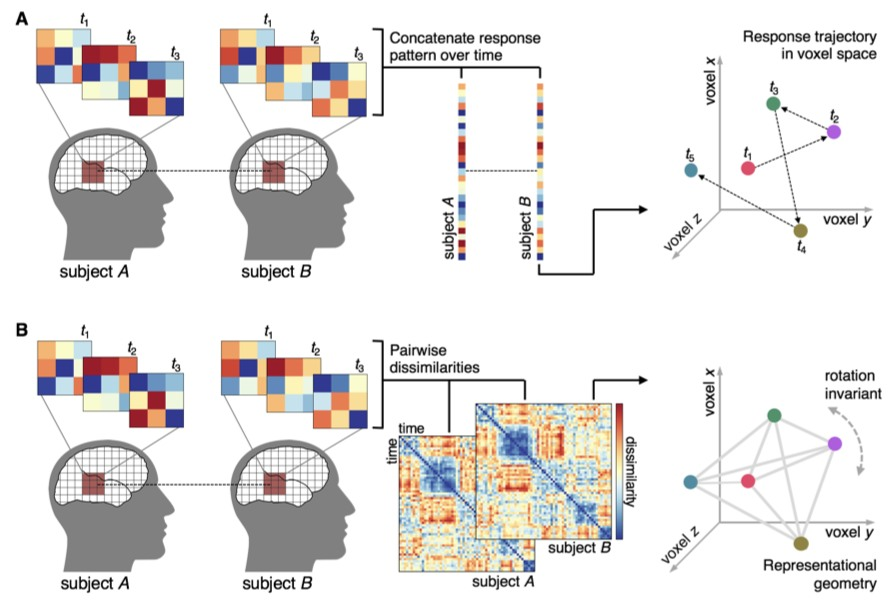

ISC 把其他人的大脑反应变成参照模型
作者Samuel A. Nastase · Valeria Gazzola · Uri Hasson · Christian Keysers
出处Social Cognitive and Affective Neuroscience, 2019, 14(6):667–685 · DOI
阅读版本本地 38 页同行评审稿，含机构封面；下文 p. 均指 PDF 页码
官方代码isc-tutorial，已核对核心实现，commit 1d4b3256d861；未运行真实神经数据
核心洞见不知道故事怎样驱动大脑时，可以用其他人的反应估计共同响应，再检验一个人是否跟随同一时间结构。
读法面向 ISC 新手；公式从用途、符号、手算到统计假设展开。文中的教学推导与示意数据均另行标明。
1. 同一个故事提供一条共同时间轴
设想十个人分别躺进扫描仪，听完全相同的七分钟故事。故事里突然出现尖锐声音，早期听觉皮层可能在相近时刻一起变化；某个人想起自己的童年，相关脑区也可能剧烈变化，但其他人未必在同一时刻经历这件事。ISC 要找的是前一种跨人一致、与实验时间轴锁定的变化。它并不要求反应一直升高，大家同步下降也能产生很高的 ISC。
传统 GLM 常先写一个刺激预测量，再问哪个体素跟随它。如果每个按钮按下的时刻都知道，这很自然。可是一个人物的意图、前文埋下的伏笔、几分钟后才消除的歧义，未必能提前变成一条正确预测曲线。本文采用一个替代办法：把另一个人的实测 BOLD 时间序列当预测量。【文中有据：Introduction，p.2–5】
这个办法的价值是降低了对刺激模型的要求。代价也很明确：一个人对刺激的真实但独特的反应，可能被 ISC 当成不共享的部分。这解释了为什么低 ISC 既可能来自噪声，也可能来自不同理解、不同时间进程或空间错位。拿到低相关值之后，还需要实验设计或额外测量来区分这些情况。
【教学预演】如果最先得到的是整脑都高度同步，先画出平均运动、呼吸和刺激开始时刻的曲线，检查是否所有区域只是在相同的开场处共同上升。去除开场瞬变和适当回归混杂能改善解释，但同时也会拿走部分与刺激真正相关的方差。空间上有区分、不同区域保留不同时间结构，比一张全脑同色地图更能说明分析抓到了具体反应。
2. Pearson correlation 把曲线比较变成向量夹角
先固定一个体素或 ROI。$x_A\in\mathbb{R}^{T}$ 表示被试 A 在 $T$ 个时刻的反应，$x_B\in\mathbb{R}^{T}$ 是 B 的反应。$T$ 是时间样本数，例如 TR 为 1.5 s 时，120 s 有 80 个采样点。要比较的是起伏形状，因此先去掉每个人的均值，再消掉量纲和整体振幅。
$\bar x_A=T^{-1}\sum_t x_A(t)$ 是 A 的时间均值，B 同理。分子是两条中心化曲线的内积：同一时刻同向偏离均值会贡献正值，反向偏离贡献负值。分母是两条向量长度的乘积。因此 $r$ 等于中心化后两向量夹角的余弦，在 $[-1,1]$ 之间。常数曲线长度为零，此时相关没有定义，不能悄悄填成 0。
四个时刻的一次完整手算
【教学示例】取 $x_A=(1,2,3,4)$，$x_B=(2,1,4,3)$。两者均值都是 2.5，中心化后分别为 $a=(-1.5,-0.5,0.5,1.5)$ 和 $b=(-0.5,-1.5,1.5,0.5)$。逐项乘积是 $(0.75,0.75,0.75,0.75)$，相加为 3。两条向量的平方和都是 5，所以 $r=3/\sqrt{5\times5}=0.6$。
把 B 的读数换成 $x'_B=100+10x_B$，相关仍是 0.6。这里的 100 被中心化去掉，10 在分子分母抵消。这一性质让不同基线、不同增益的被试可以比较，也决定了 ISC 不能回答谁的激活幅度更大。$r^2=0.36$ 在带截距的单预测量线性回归中是样本内可解释方差比例；它不是共同神经过程的无条件测量值。
最后一个等式把 Pearson 和 z-score 对上：使用样本标准差时分母是 $T-1$。显式标准化不是单次 Pearson 的必要步骤，但在多个片段拼接前逐段标准化，可以防止片段之间的基线差异制造人造相关。
3. 共同成分的权重和方差比例需要分开

原图 1 把测量分成共享刺激成分、刺激诱发的个体成分、刺激无关成分。把前两者区分开很关键：不与别人同步的部分，也可能真实响应了故事。【文中有据：Formal definition，p.5–7】为了把相关和信噪比的关系讲清，下面使用一套明确的教学记号：
| 符号 | 形状 | 含义与假设 |
|---|---|---|
| $x_i,c,d_i,\varepsilon_i,u_i$ | $T$ 维向量 | 测量、共同刺激反应、个体刺激反应、噪声、后两者的总和 |
| $a_i,b_i$ | 标量 | 振幅系数；不是直接的方差百分比 |
| $p_i$ | $[0,1]$ 标量 | 共享成分占总方差的比例 |
假设共同成分与各人的残差不相关，各人的残差彼此不相关，$\operatorname{Var}(c)=1$。于是 $\operatorname{Cov}(x_A,x_B)=a_Aa_B$，而 $\operatorname{Var}(x_i)=a_i^2+\sigma_{u_i}^2$。把它们放进 Pearson 定义：
如果两人的共享方差比例都是 0.5，那么两两相关为 0.5。如果 A 是 0.8，B 是 0.2，则相关为 0.4。这个值同时受两个人影响，因此不能把一个 pairwise correlation 单独归为 A 的可靠性。只有在以上简化假设成立时，才可作这种方差解释；共同头动等跨人混杂会额外进入协方差。

例如振幅权重 $\alpha=0.2$ 时，pairwise 相关的理论值是 $0.04/(0.04+0.64)\approx0.0588$，而不是 0.2。理解了平方来自方差，就能直接读懂图 2 的 S 形曲线。【教学推导，非论文新增实测结果】
【教学预演】若低 ISC 被解释为这个人没有理解故事，可先检查其信号质量，再看同一个人重复观看时的 intrasubject correlation，最后联合行为分数。重复测量可保留稳定的个体反应，但熟悉效应会改变观看过程；重复后仍低，也不自动等于没有编码信息。
4. Leave-one-out 通过群体平均提高参照信噪比
假设有 $N$ 人，每个 ROI 的数据组织为 $X\in\mathbb{R}^{T\times V\times N}$，其中 $V$ 是体素或 ROI 数。固定 $v$ 后，pairwise 方法把每两人相关一次，得到 $M=N(N-1)/2$ 个不同的数。$N=4$ 时是 AB、AC、AD、BC、BD、CD 六对；一个人出现在 $N-1$ 对里。这六个数显然共享被试，不能当六名独立参与者。
Leave-one-out（LOO）每次留出一人，先平均其余人，得到更干净的参照。对固定 ROI：
$\bar x_{-i}\in\mathbb R^T$；最后的下标 $t$ 提醒相关跨时间计算。LOO 总共返回 $N$ 个值。平均后随机残差有机会相消，刺激共同成分被保留。若个体共享增益不同，平均估计的是共同波形的某个倍数，而非数值上必然等于 $c(t)$；Pearson 对正的缩放不敏感。
有限人数下的理论比较
【教学推导】令各人都具有单位总方差，$x_i=\sqrt p\,c+\sqrt{1-p}\,n_i$，所有 $n_i$ 独立、单位方差。平均 $N-1$ 个独立噪声后，其方差从 1 降到 $1/(N-1)$。因此：
当 $p=0.5,N=5$ 时，pairwise 是 0.5，LOO 是 $0.5/\sqrt{0.625}\approx0.632$，无限多人参照的极限是 0.707。LOO 数字更高，来自参照降噪；不能据此声称它找到了更多共享神经信息。人数也会影响 LOO 的数值，跨组比较应匹配或重采样人数，并说明参照由谁构成。
拖动 $p$，观察 pairwise 水平线与 LOO 随人数变化的曲线。所有数值都来自上式，不是论文实测数据。
人数增加改善的是平均参照。$p$ 接近 1 时，两种方法都趋近 1；$N=2$ 时 LOO 退化为两人直接相关。
【教学预演】如果把目标本人也放进群体均值，即使每个人都是独立噪声，仍有 $\operatorname{Cov}(x_i,\bar x)=1/N$；在单位方差、独立噪声条件下，$\operatorname{corr}(x_i,\bar x)=1/\sqrt N$。例如四个人会无中生有地产生 0.5 的理论相关。LOO 中排除本人正是为了切断这条自我预测路径。LOO 的各个输出仍共享参照成员，因此依赖问题并未消失。
5. Fisher z 平均与数据标准化是两种运算
前面用 z-score 标准化的是时间序列；这里的 Fisher z 变换处理的是已经算好的相关系数。相关系数被限制在 $[-1,1]$，靠近边界时分布不对称。Fisher 变换把它映射到整条实数轴，再在该空间取平均：
【教学示例】两次相关为 0.2 与 0.8，原始平均是 0.5。变换后分别约为 0.2027 和 1.0986，平均为 0.6507，变回得到约 0.572。两个结果差异来自平均的空间。作者推荐对均值使用 Fisher 变换，非参数统计也可用中位数作汇总。【文中有据：p.17；Appendix D，p.38】
Fisher 变换不会消除被试对之间的依赖，也不会让时间自相关消失。教科书中的近似标准误 $1/\sqrt{T-3}$ 要求相应的独立采样条件；对缓慢 BOLD 曲线，直接把 TR 数当作独立样本数往往过于乐观。接下来的推断必须保留数据原有的依赖结构。
6. ISFC 把同一区域的同步扩展为跨区域矩阵

假设你关心海马和后扣带皮层是否一起跟随故事。把同一个人的两个 ROI 相互相关，得到普通 functional connectivity（FC）。问题是这个人的呼吸、头动和全脑生理波动也可能同时进入两区。ISFC 改成把 A 的海马与 B 的皮层相互相关，以削弱不跨人共享的混杂。【文中有据：Temporal ISFC，p.7–8】
$X_A\in\mathbb R^{T\times V}$，行是时间，列是区域。$C_{AB}(v,w)$ 取 A 的第 $v$ 区和 B 的第 $w$ 区，跨时间算一次相关。矩阵对角线 $v=w$ 正是传统 ISC。非对角线 $v\ne w$ 是跨人、跨区的共同时间结构。由于 A 的海马对 B 的皮层，与 A 的皮层对 B 的海马不必相等，原始矩阵一般不对称。
上述是同一组区域下常用的对称化方法。矩阵转置交换区域位置；它并没有估计信息方向。如果跨不同区域集合计算，未必有可一一转置的结构，必须先明确目标定义。LOO 版本则把 B 的各区曲线换成其他人的平均曲线。
【教学示例】$V=2$ 时，假设 $C_{AB}=\begin{pmatrix}0.6&0.3\\0.1&0.5\end{pmatrix}$，则 $S_{AB}=\begin{pmatrix}0.6&0.2\\0.2&0.5\end{pmatrix}$。0.6 和 0.5 分别是两区的 ISC，0.2 是两个方向的跨人跨区相关平均。没有任何一步观察到 A 的脑信号传入 B，也没有区分海马驱动皮层与共同输入同时驱动两区。
【教学预演】如果 FC 很高而 ISFC 接近零，先检查信号是否只是个体内部共同波动；也可能存在时间不锁定的真实功能联系。ISFC 侧重刺激锁定的共同反应，不能覆盖所有脑内连接。若想讨论方向或必要性，需要额外的任务操纵、时间模型和干预证据。
7. 空间 ISC 改变了相关运算的轴

Temporal ISC 固定体素，沿时间相关。Spatial ISC 固定时刻，沿多个体素相关。令 $P_i(t,:)\in\mathbb R^V$ 为被试 $i$ 在时刻 $t$ 的空间反应模式，那么跨人、跨时刻的模式相关矩阵为：
$K$ 的对角线描述同一时刻两个人是否具有相似空间模式；非对角线描述不同时刻的模式能否对应。例如观看中的一个事件模式是否在回忆该事件时重现。和 ISFC 恰好相反：ISFC 的结果轴是区域×区域，这里是时间×时间。【文中有据：Spatial ISC，p.8–9】
【教学示例】A 在两个时刻的模式分别为 $(1,2,3)$、$(3,2,1)$，B 为 $(11,12,13)$、$(13,12,11)$。每个同一时刻跨体素相关都是 1，不同时刻是 −1。B 的整体基线上升 10 不影响空间相关。若每个时刻全 ROI 都是同一个常数，空间向量没有方差，空间相关没有定义；即便 ROI 平均时间曲线能在两人之间完全同步，也无法由此建立空间模式证据。

图 5A 把一个 ROI 的多个时间模式拼成 $TV$ 维向量，比较整条时空轨迹。这要求体素功能坐标能够对应，而且要控制静态空间基线，以免拼接相关被稳定的空间分布主导。图 5B 则先在每个人内部构造时间模式的 representational dissimilarity matrix（RDM），再比较两人的 RDM：
$d$ 是事先选定的距离，例如相关距离 $1-r$；$q_i$ 长度为 $T(T-1)/2$，只保留非重复的半个矩阵。它比较的是事件之间的关系结构，因而可能在体素坐标不完全一致时仍有意义。作者图示的旋转不变直觉，需要距离定义配合：欧氏距离和内积对正交旋转不变；Pearson 相关距离还涉及跨体素中心化，任意旋转下不能不加条件地沿用同一说法。实际分析必须明确距离及预处理。
Spatial ISC、时空拼接和 RDM 相关不是同一问题的三个可互换数值。第一种问当下模式，第二种问整段对应，第三种问关系几何。根据实验假设选择之后，再决定哪些对齐、回归和统计单位与之匹配。
8. 统计检验必须保留被试依赖和时间自相关
第一层是算相关，第二层才是问能否推广。设 $S_{\mathrm{obs}}$ 为一个 ROI 的中位数或 Fisher 均值 ISC。零假设可以是没有时间锁定，或两个条件没有差异；两种问题需要不同的随机化。本文的方法建议来自既有验证研究，它不是对所有实验设计的统一最优解证明。【文中有据：p.15–17】
| 要检验的主张 | 随机化对象 | 保留的结构 |
|---|---|---|
| 共同时间锁定超过偶然 | 各被试曲线的循环移位或 Fourier 相位 | 单条曲线的自相关或功率谱 |
| 群体 ISC 估计及不确定性 | 被试级 bootstrap | 同一人进入多对相关的依赖 |
| 两个独立组的差异 | 被试级组别标签 | 整名参与者及其所有相关关系 |
| 同一个人的条件差异 | 符合配对设计的条件交换或相应模型 | 参与者内配对及设计规定的可交换性 |
循环移位和相位随机化
循环移位把曲线 $x_i(t)$ 换为 $x_i((t+k_i)\bmod T)$。它保留原有样本和循环意义下的自相关，但打乱跨人的时刻对应。不同被试要采用适当的独立移位；给所有人同移一个量不会破坏同步。过小的移位也可能保留慢波相关，因此可接受移位的范围要与时间尺度一致。
$\mathcal F$ 是 Fourier 变换，$A_i(f)$ 是频率 $f$ 的振幅，$\phi_i(f)$ 为原相位，$\theta_i(f)$ 是随机相位。振幅不动，功率谱因而不动；相位打乱，原来的时刻对应被破坏。为了逆变换仍是实信号，正负频率要满足共轭对称。对多个体素是否共同随机化相位，需要按要保留的脑内协方差结构决定，不能逐体素随意处理。
这是单侧 Monte Carlo p 值的一种常用有限样本写法，$B$ 是随机化次数，$\mathbf1$ 是条件成立时为 1 的指示函数。加 1 防止有限次抽样产生精确的 0。双侧检验要事先定义比较绝对值还是两侧尾部。随机化所得的不确定性取决于平稳性等假设，不能把它等同于刺激样本总体的泛化。
被试级 bootstrap 与组别置换
Pairwise bootstrap 每次有放回抽被试，再取相应行列重建相关矩阵。重复抽到同一人会产生相关为 1 的自我配对，这些条目应排除，否则估计被人为抬高。把每条相关边独立抽样会丢失共享节点的依赖。要用 bootstrap 做零假设检验，还要按相应方法对分布作零中心化；一个普通 bootstrap 置信区间和一个检验零相关的分布不是同一个对象。
两组置换则先交换整名参与者的组别，再重新计算组内参照与统计量。LOO 的组内均值会随标签变化，直接把已经固定的条件相关值任意重排不一定等价。组内配对、重复扫描或家系结构存在时，可交换单位也必须相应收紧。原文讨论部分 LOO 条件比较可采用参数检验，并指出验证仍在推进；初学时最重要的是先写清设计和零假设，而非先选择某个 API。
【教学预演】20 人产生 190 对相关。如果将 190 当独立样本，p 值可能变得很小，即使独立参与者仍是 20。最便宜的诊断是保持原始相关矩阵，比较逐边随机化与逐人随机化的零分布。合适的被试级检验会付出更宽的不确定性，换来与实际采样单位相符的推断。
9. 多重比较控制的是一组检验的错误
一张全脑地图可能同时检验成千上万个位置。若每处都按未校正 $p\lt0.05$ 着色，即使零假设处处成立，也会出现许多偶然颜色。Benjamini–Hochberg FDR 把排序后的 p 值 $p_{(1)}\leq\cdots\leq p_{(V)}$ 与线性阈值比较：
$V$ 是测试数量，$q$ 为目标 FDR。它在相应条件下控制发现集合中错误比例的期望，不是保证这一张地图中恰好至多 5% 为假阳性，也不是把某个体素为假的概率直接设为 5%。这比原文对 FDR 的口语化描述更精确。
Max-statistic 方法在每次随机化中取整张脑图的最大统计量 $M_b=\max_v S_b^*(v)$，再将每个真实体素与同一最大值零分布比较。它将全脑搜索一并放入零假设，从而在相应条件下控制 FWER，即至少出现一次假阳性的概率。簇水平推断控制的则是簇，不能自动把簇内每个体素都解释为单点显著。
10. 时空对应决定 ISC 能看见的尺度
本文的 Box 1 和 Appendix A 是实做入口，分别位于 p.21 与 p.32–33。时间上，大家必须经历可以对应的刺激。刺激应该锁定扫描触发，记录触发日志；对短片段先按刺激切出、去掉非特异开场，再逐段标准化。作者建议的 30–60 TR 片段长度是经验起点，不能把它当所有脑区都适用的最短窗口。
空间上，同一个模板体素不保证代表完全同一种功能。Temporal ISC 常通过 4–8 mm 平滑改善粗尺度对应，代价是模糊空间细节；Spatial ISC 通常需要较少平滑或功能对齐。Hyperalignment 若在同一测试片段上拟合，会把之后要检验的相似性带入变换，因此应采用独立训练数据或严格交叉验证。
【教学推导】$Y\in\mathbb R^{T\times V}$ 是测量，$C\in\mathbb R^{T\times K}$ 包含运动、生理代理、趋势和时间滤波基，$C^+$ 为伪逆，$I\in\mathbb R^{T\times T}$ 为单位矩阵。$CC^+Y$ 是混杂可预测部分，减掉后得到残差。将滤波和混杂放入同一个模型，可避免先后执行两个不交换的投影时重新引入已去掉的成分。残差保留了什么时间频率，必须和科学问题一致。
若每个人独立删除高头动 TR，再按剩余行号直接相关，行号 100 将可能对应不同剧情。正确的选择包括保留统一的刺激坐标、采用一致有效时间掩码或明确处理缺失。插值能维持数组长度，却改变时间结构；要记录处理，而不是让数据看起来整齐就算完成。
11. 一次可核对的最小 ISC 计算
下面是按定义写的教学实现，非官方代码。它展示数据轴、排除本人和 Fisher 汇总；不执行群体显著性检验。四个时刻足以手算，但不足以代表真实 BOLD 推断。真实数据的统计方法应回到第 8 节。
代码 · 最小 LOO 示例
import numpy as np
X = np.array([[1, 2, 1], [2, 1, 3],
[3, 4, 2], [4, 3, 4]], dtype=float) # (T=4, N=3)
r = []
for i in range(X.shape[1]):
ref = np.delete(X, i, axis=1).mean(axis=1) # (T,)
r.append(np.corrcoef(X[:, i], ref)[0, 1])
print(np.round(r, 4)) # [0.9899, 0.3162, 0.4472]
print(np.tanh(np.arctanh(r).mean())) # Fisher 平均约 0.8181以 A 为例，其他两人的平均为 $(1.5,2,3,3.5)$，中心化是 $(-1,-0.5,0.5,1)$。A 的中心化向量为 $(-1.5,-0.5,0.5,1.5)$，内积 3.5，平方和分别为 5 和 2.5，所以 $r_A=3.5/\sqrt{12.5}\approx0.9899$。完整输出为 0.9899、0.3162、0.4472，Fisher 平均为 0.8181。
官方代码的 isc_standalone.py 中，isc 用删除目标被试后的均值构造参照，compute_summary_statistic 对均值执行 tanh(mean(arctanh(...)))。官方 notebook 则将核心估计与 bootstrap、permutation、timeshift、phaseshift 分开。核对的是定义和静态实现；本次没有安装 BrainIAK 或复现真实神经数据结果。
12. 附录把方法落到四种工作路径
| 原文位置 | 内容 | 读完应带走的决定 |
|---|---|---|
| Appendix A，p.32–33 | 预处理、掩码、切段、标准化 | 保留刺激时间对应并明确空间尺度 |
| Appendix B，p.34 | LOO 与两条件配对参数比较 | 把配对设计、Fisher 变换和依赖假设分开核对 |
| Appendix C，p.35–36 | ISC Toolbox 的 pairwise 路径 | 确认输出是相关值还是校正后的阈值 |
| Appendix D，p.37–38 | BrainIAK 教程、估计与非参数检验 | 先选科学问题，再匹配数据输入和统计函数 |
这篇教程最有用的改变，是让我们能在没有完整刺激模型的条件下研究共享时间结构。一个可靠的 ISC 结果同时依赖四件事：被试听到的内容可以对应、区域或表示可以对应、零假设保留正确依赖、解释与测量轴一致。把这四件事写清，相关系数才会成为可讨论的神经科学证据。